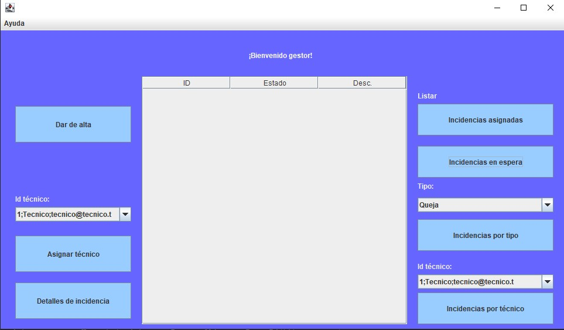

Gestor
El gestor respecto a la aplicacion tiene los mismos podres del administrador, restando la creación y eliminacion de diversos elementos.
Podrá, al igual que el administrador, ver las incidencias en las cuales ha sido solicitada un reapertura.
El gestor podrá:
- Dar de alta una incidencia:
Da de alta la incidencia seleccionada cambiando el estado a aprobada.
- Asignar a un tecnico a una incidencia:
Asigna a la incidencia seleccionada el técnico con el Id indicado.
- Detalles de incidencia:
Abre un cuadro de diálogo con información sobre la incidencia seleccionada.
- Visualizar las incidencias en espera:
Lista las incidencias con estado “espera”.
- Filtrar por tipo:
lista las incidencias con el tipo indicado.
- Filtrar por técnico:
lista las incidencias con el técnico asignado que tenga el id indicado.
Imágen de referencia

Para la visualización se cuenta con una tabla en medio